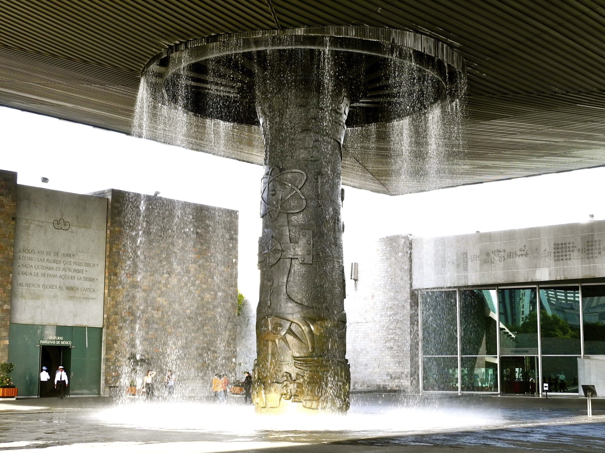
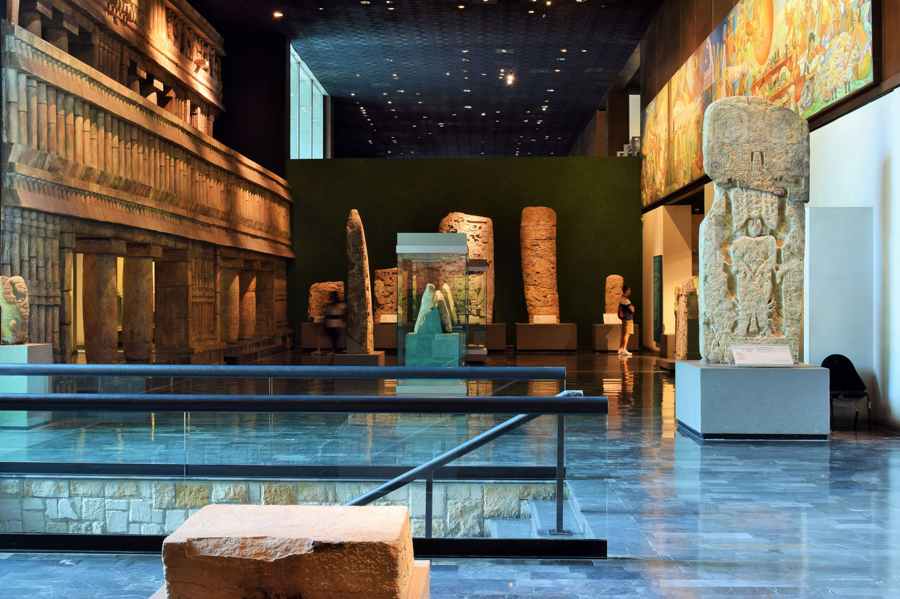
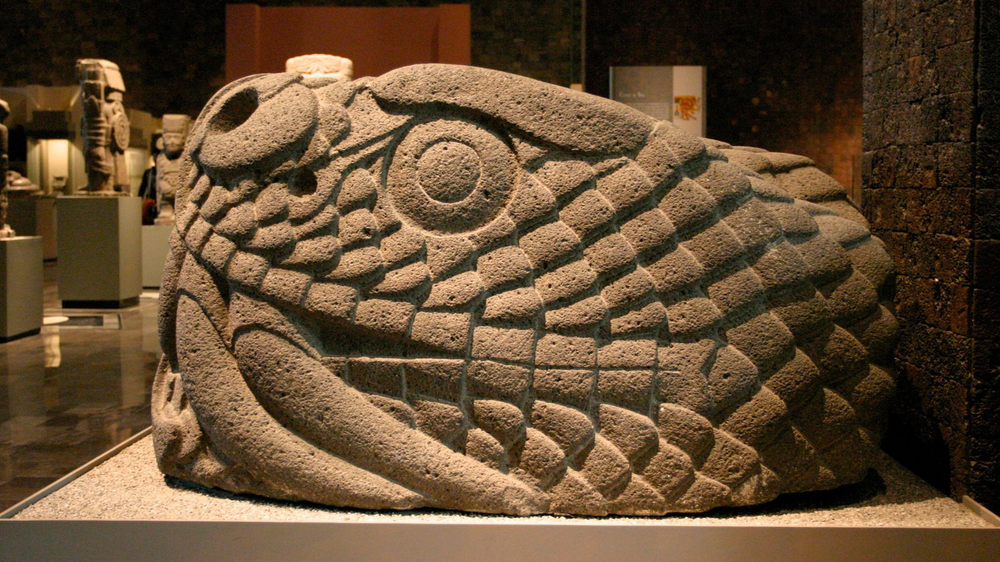
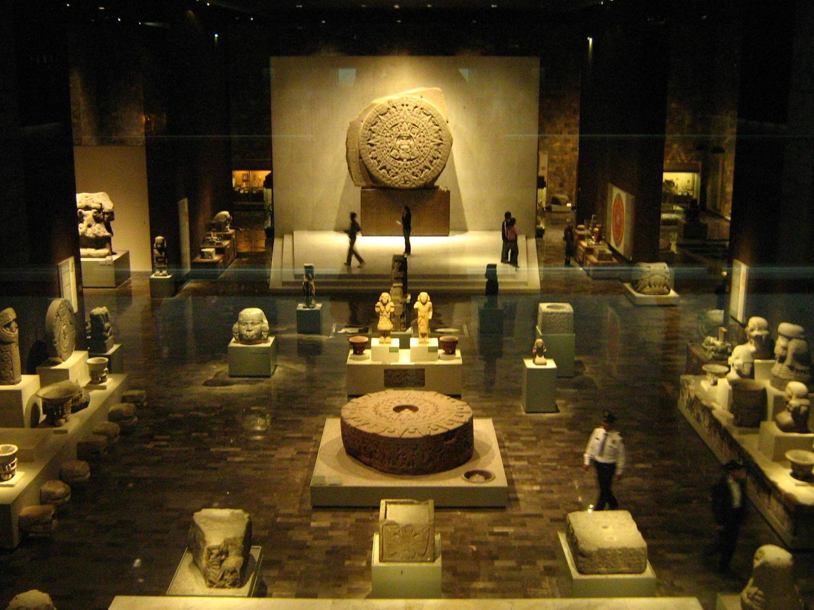

El Museo Nacional de Antropología (MNA) es uno de los recintos museográficos más importantes de México y de América Latina.
Está concebido para albergar y exhibir el legado arqueológico de los pueblos de Mesoamérica, así como para dar cuenta de la diversidad étnica actual del país. El edificio actual del MNA fue construido entre 1963 y 1964 en el Bosque de Chapultepec por instrucción del presidente Adolfo López Mateos, quien lo inauguró el 17 de septiembre de 1964. Actualmente, el edificio del MNA posee 23 salas de exposición permanente, 1 sala de exposiciones temporales y dos auditorios.
Alberga el acervo de la Biblioteca Nacional de Antropología e Historia.
La colección del Museo Nacional de Antropología está conformada por numerosas piezas arqueológicas y etnográficas provenientes de todo México. Entre algunas de las piezas más emblemáticas de la colección se cuenta la Piedra del Sol —que es el corazón mismo del museo—, las monumentales esculturas teotihuacanas dedicadas a los dioses del agua, el tesoro de la tumba del rey Pakal, así como un atlante tolteca traído desde Tollan-Xicocotitlan y el Monolito de Tláloc que custodia la entrada al museo.
El paraguas
Emblemático elemento arquitectónico.

Este emblemático elemento arquitectónico, además de resguardar a los visitantes, fue diseñado para enfatizar el respeto por el entorno natural mediante su caída libre de agua. Su monumental estructura superior, que cubre una superficie de 84 por 52cm; es soportada por cables conectados a los edificios aledaños, y se sitúa entre las “cubiertas colgantes” más grandes del mundo.
Su columna fue revestida en bronce con un relieve escultórico hecho por los hermanos Chávez Morado, cuyo diseño se basó, a su vez, en el concepto y guión de Jaime Torres Bodet. La composición escultórica se titula "Imagen de México", y lleva como eje los cuatro puntos cardinales.
Salas
El Museo Nacional de Antropología (MNA) cuenta con 24 salas de exhibición, de las cuales 23 son permanentes y una está destinada a exposiciones temporales, que en ocasiones son muestras museográficas provenientes de diversos museos del mundo. El acceso a esta última se encuentra separado del resto del museo.

Originalmente todas las esculturas del monumento deberían ser de mármol, pero solo las más altas lo son. Las de bronce se hicieron inicialmente en México en bloques de yeso, para luego llevarlas a Florencia, Italia, donde se tomaron como base para hacerlas por el método de cera perdida. Las esculturas de mármol se empezaron en Francia con mármol de Carrara para lograr transportarlas con el mínimo de peso a México, donde fueron detalladas.
Las salas permanentes se encuentran distribuidas en las dos plantas del edificio. En la planta baja se localizan las salas dedicadas a la introducción a la antropología y a las culturas del territorio mexicano, desde el Poblamiento de América hasta el Período Posclásico mesoamericano. En el segundo nivel se encuentran las 11 salas de etnografía, donde se exponen muestras de la cultura material de los pueblos indígenas que viven en México en la actualidad.
Las salas de antropología y arqueología están dispuestas alrededor de la parte descubierta del patio central, que es donde se encuentra el estanque de lirios, y están ordenadas según un criterio cronológico comenzando por el lado derecho hasta llegar a la sala Mexica. A partir de la sala de las culturas de Oaxaca, el orden de presentación es geográfico. Cabe destacar que la sala de culturas del norte está dedicada a pueblos que pertenecieron a la zona conocida como Aridoamérica, región que se extiende al norte de los límites de Mesoamérica.
Piezas
Salas de exhibición permanente y temporales

Las salas de antropología y arqueología son:
Culturas Indígenas de México,
Introducción de la Antropología,
Poblamiento de América,
Preclásico en el Altiplano Central,
Teotihuacán,
Los Toltecas y su época,
Mexica,
Culturas de Oaxaca,
Culturas de la Costa del Golfo,
Maya,
Culturas de Occidente,
Culturas del Norte y
Olmecas
La sala del poblamiento de América
del MNA está dedicada al proceso de desarrollo de los primeros seres humanos que llegaron a América. Al igual que la sala Introducción a la Antropología, esta también fue objeto de la reestructuración del museo realizada entre 1998 y 2000. En este proceso recibió el nombre que lleva en la actualidad entre 1964 y 1998 se llamó sala de los Orígenes y se orientó hacia la evolución de las culturas indígenas americanas desde las primeras migraciones hasta la diferenciación de los pueblos mesoamericanos respecto al resto de las sociedades paleoindias.
La primera sala del MNA corresponde a una introducción a la actividad de la Antropología. Originalmente se concibió como un espacio para acercar a los visitantes a las cuatro ramas en que se divide clásicamente a la Antropología —antropología física, antropología social, etnología y lingüística—.
Interiores
Iluminación nocturna

Seguramente, el museo más popular de nuestra ciudad y nuestro país es el Museo Nacional de Antropología. Con más de 2 millones de visitas al año, se posiciona como uno de los mayores atractivos turísticos y culturales de la capital.
El mayor reto para la construcción es que contrastara con el medio ambiente sin desentonar, y sobre todo que representara la cultura prehispánica y sus tradiciones, conservando sus valores y constantes culturales, pero aplicándolos con soluciones nuevas y en armonía con las necesidades contemporáneas.
Construcción
La historia detrás del Museo de Antropología
Mientras que la fachada –hecha de piedra volcánica y mármol– invita al espectador a pasar a través de la magnitud, en la sala del vestíbulo se encuentra una construcción circular que fue realizada en honor a la pirámide de Cuicuilco, donde originalmente se exhibía “la pieza del mes”.